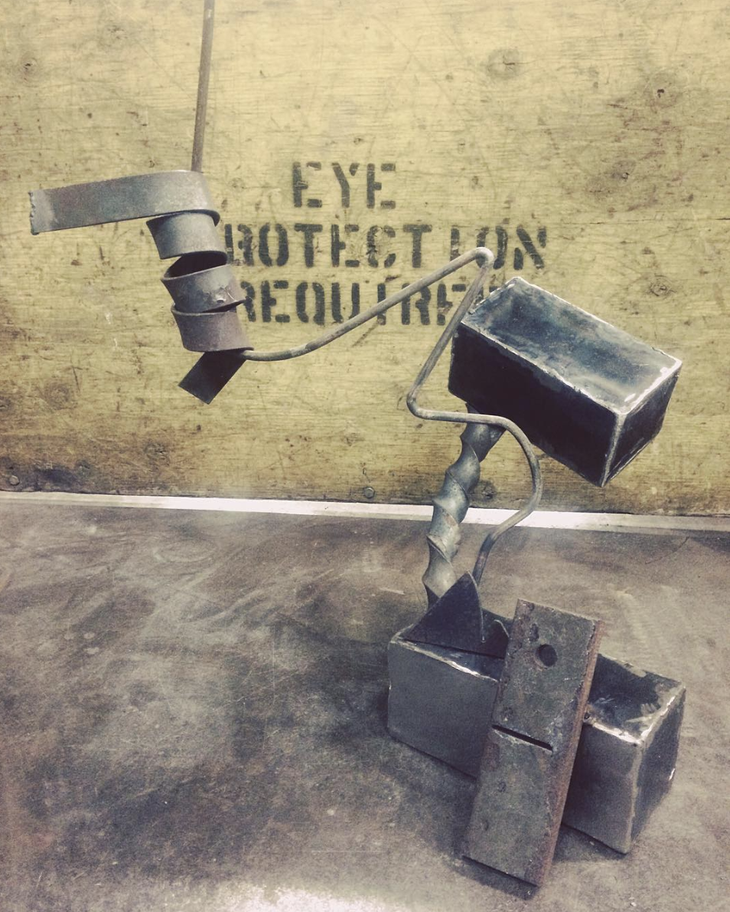
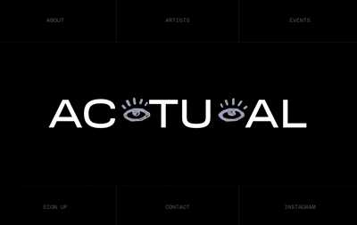
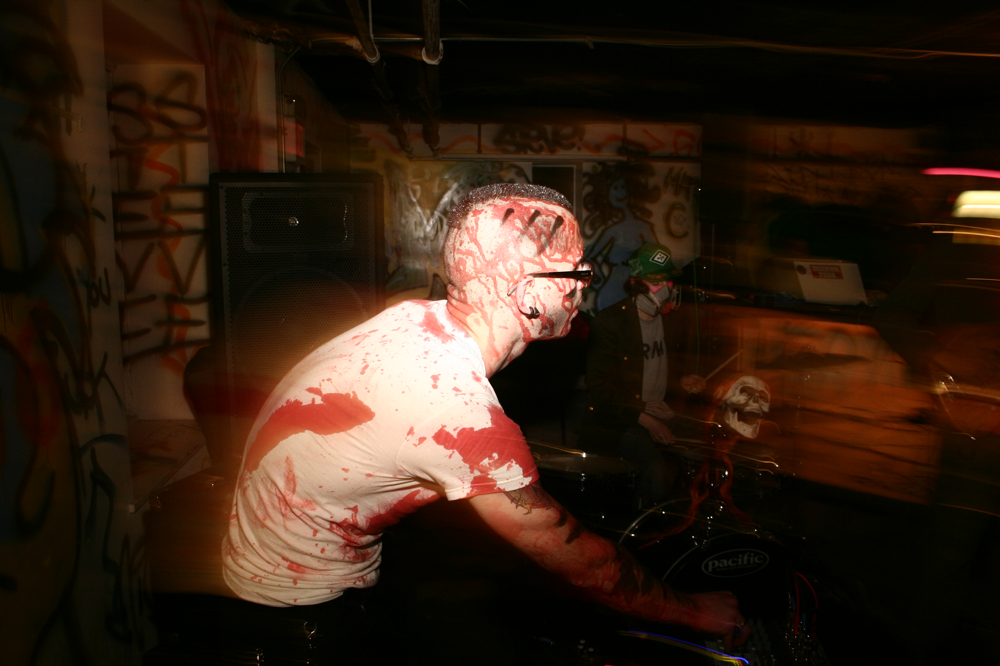

Have you seen him?

Works
Technical Services Catalog
Realtime Systems & Interactive Media
- Unity/Unreal engine development for installations
- Max/MSP/TouchDesigner pipeline integration
- Computer vision & motion tracking
- Projection mapping & multi-screen synchronization
- Shader programming & custom visual effects
- Physics simulation & virtual prototyping (object → environment scale)
- Rendering pipelines for documentation/visualization
Virtualization & Spatial Computing
- Photogrammetry & 3D scanning (LiDAR, object-scale to architectural)
- Digital twins for virtual/physical space injection
- VR prototyping & immersive preview environments
- Telepresence systems in existing spaces
Physical Computing & Embedded Systems
- Microcontroller programming (sensor integration, motion control, lighting)
- Kinetic sculpture systems
- Custom hardware interfaces for interactive works
- Serial communication & device orchestration
- Circuit design & electronics prototyping
Fabrication & Production
- CAD for CNC/laser/3D print workflows
- Mechanical design & topology optimization
- Soldering, welding, machining
- System architecture for complex installations
- Technical feasibility consulting & workflow optimization
Reverse Engineering
- Software
- Hardware
- Systems
- Ideas
- Websites

DIY


No Nation / The Gallery Formerly Known As Happy Dog was a long running DIY arts and music venue, where Derek Repsch was the primary organizer for ~2009-2011.
Bio

Derek Repsch builds systems both in creative practice and technical service. Spent his twenties exploring audio-visual installation, new media, and conceptual work in Chicago's DIY scene, then stepped back to train as an engineer. Last decade focused on realtime graphics, embedded systems, CAD, low-level software - skills that now feed back into art practice. Work investigates technical mediation: how interfaces reorient bodies, how systems collapse or extend distance. Capable of reverse-engineering and prototyping most things, applying process to multi-domain problems. Seeking residency to reactivate personal practice while providing technical support. Enthusiastic about contributing to Seattle's art scene after years away.